V005 图文发布稿（带图版）
标题
Codex 新手教程：从 Key 配置到第一次运行和日志核对
前两段短文案
这条视频按真实录屏路线演示 Codex 新手第一步：先在积木代码助手确认 Codex 产品线和 Key，再按 Windows PowerShell 配置 CLI，最后用一个干净测试目录做首次运行，并回到用量日志核对记录。
这篇主要解决：一上来就让 Codex 改真实项目，结果失败后不知道是 Key、配置、权益、网络还是项目目录问题。看完你能：从积木代码助手网站确认 Codex 产品线、价格/权益、Key 管理和 CLI 文档入口。建议先收藏，操作时对照配图一步步核对。
备用标题
Codex 别急着改项目，先把 Key、配置和日志跑通 Codex 入门第 1 集：新手从 0 到 1 的第一条路线
完整正文备用
这条视频按真实录屏路线演示 Codex 新手第一步：先在积木代码助手确认 Codex 产品线和 Key，再按 Windows PowerShell 配置 CLI，最后用一个干净测试目录做首次运行，并回到用量日志核对记录。重点不是炫复杂项目，而是让你知道失败时该先看终端输出、配置文件、Key/API 地址、权益状态和日志页。
这篇适合刚开始接触积木代码助手、Codex 或 Claude Code 的同学。不要只盯着一个按钮或一条命令，建议按图里的顺序看：先看当前问题，再看操作路径，最后确认结果有没有真正跑通。
常见卡点： 一上来就让 Codex 改真实项目，结果失败后不知道是 Key、配置、权益、网络还是项目目录问题 Codex / Claude Code / Gemini 的 Key 产品线混用，终端报错后反复重装 配置写入了 ~/.codex/auth.json 和 ~/.codex/config.toml，但没有重开终端，也没有开新会话验证 不知道用量日志只看当天记录，录屏时没有提前准备登录态和可用额度
看完这篇，你应该能做到： 从积木代码助手网站确认 Codex 产品线、价格/权益、Key 管理和 CLI 文档入口 在 Windows PowerShell 中检查 Node.js / npm，安装或确认 Codex CLI 用 Codex Key 写入 ~/.codex/auth.json 与 ~/.codex/config.toml，并知道关键配置项在哪里看 在干净测试目录里启动一次 Codex，先做“小任务验证”，再去真实项目
我的建议是，第一次操作时不要一边改很多地方，一边猜原因。先把页面、终端输出、配置文件、日志记录这几块分开看，哪一步不一致，就从那一步往回查。
如果你也在配置或使用 AI 编程工具，可以先收藏这篇。后面遇到类似问题时，按这条路线重新核对一遍，通常能更快判断下一步该看哪里。
配图说明
首图用 cover-flow-images/V005-cover-douyin.png。 第二张用 cover-flow-images/V005-flow.png。 后面从 ppt-images/slide-01.png 到 ppt-images/slide-08.png 里选关键步骤图。 如果平台限制图片数量，优先保留：流程图、关键操作、常见错误、结果确认。
配图预览
首图与流程图
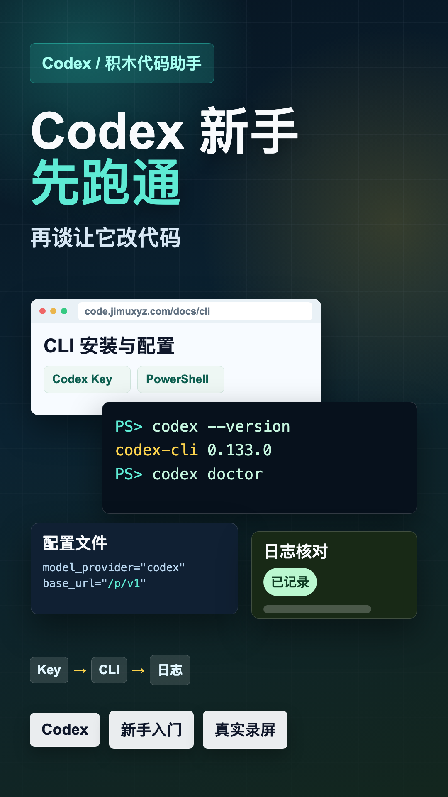
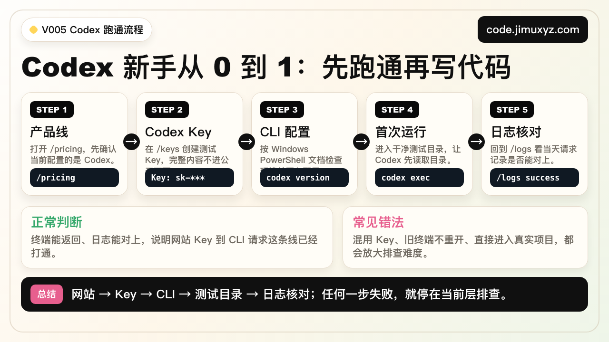
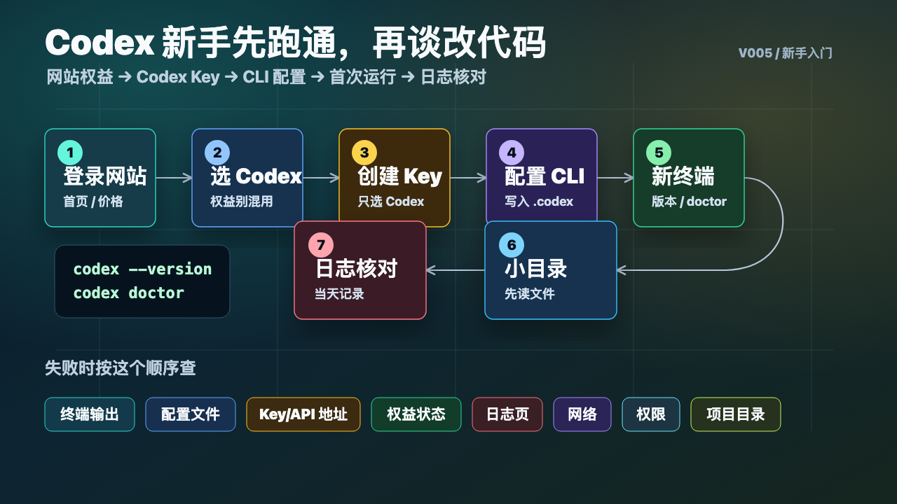
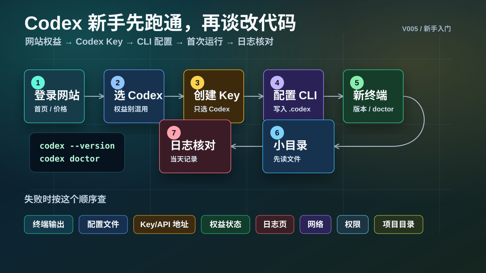
PPT 步骤图
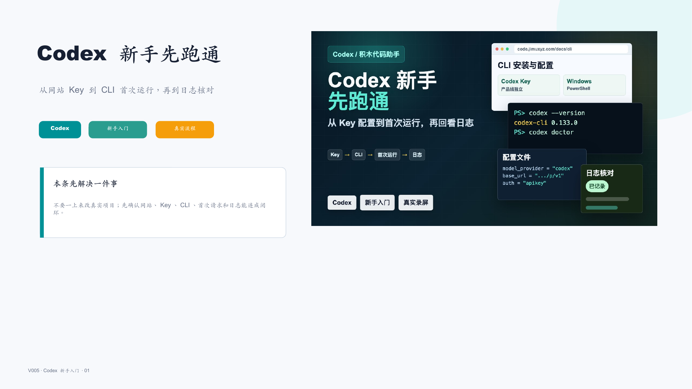
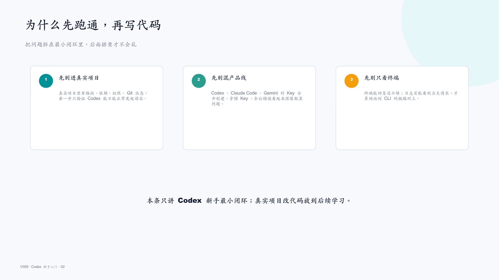
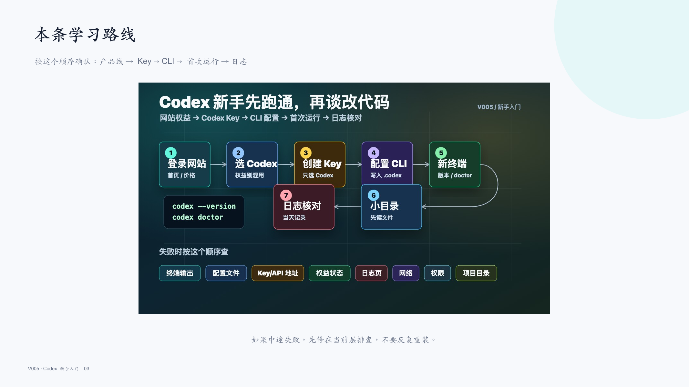
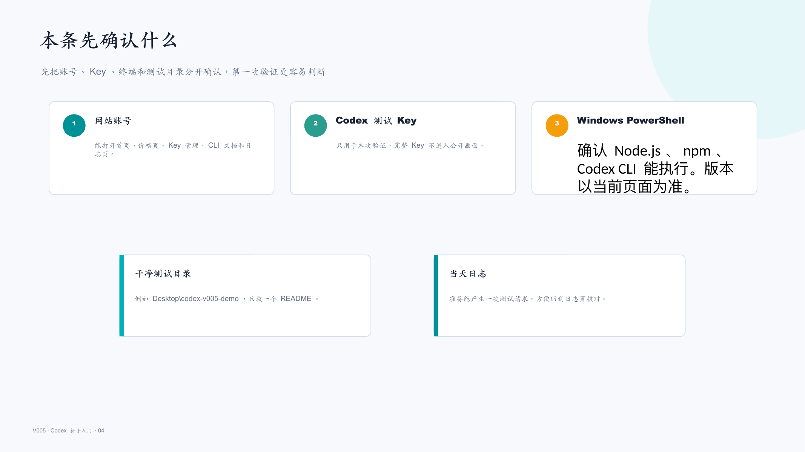
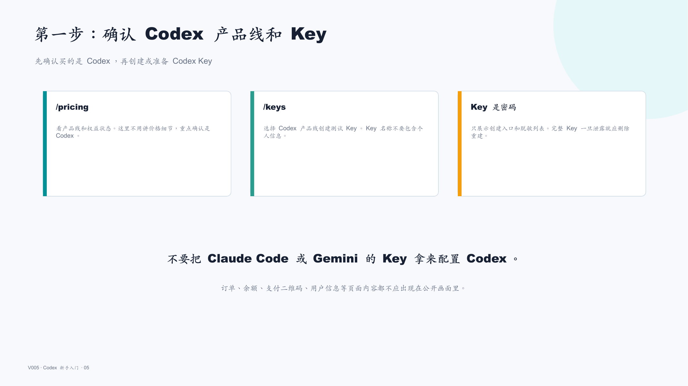
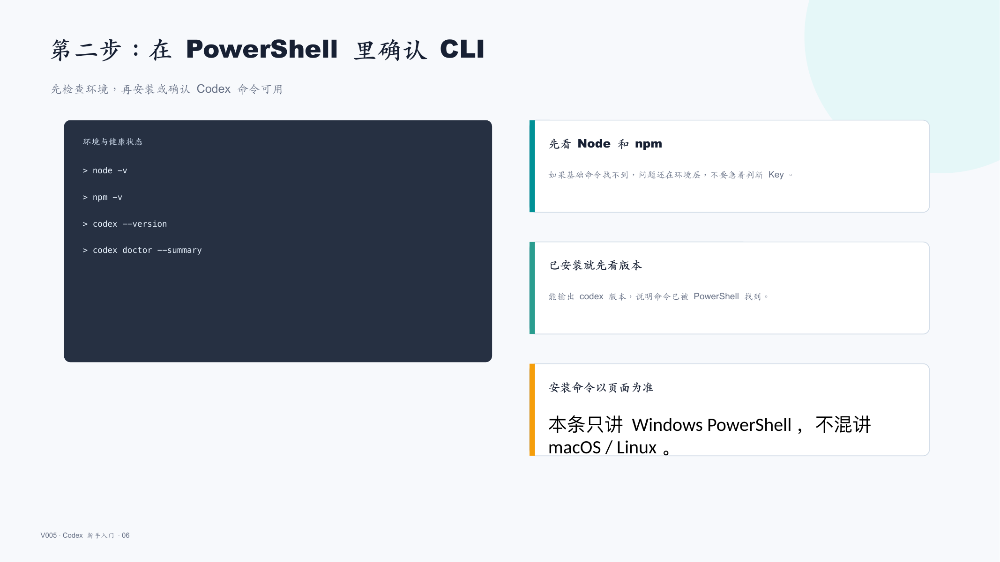
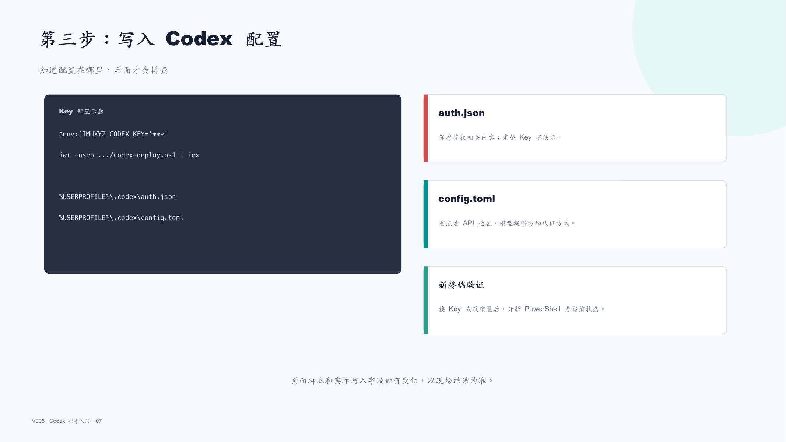
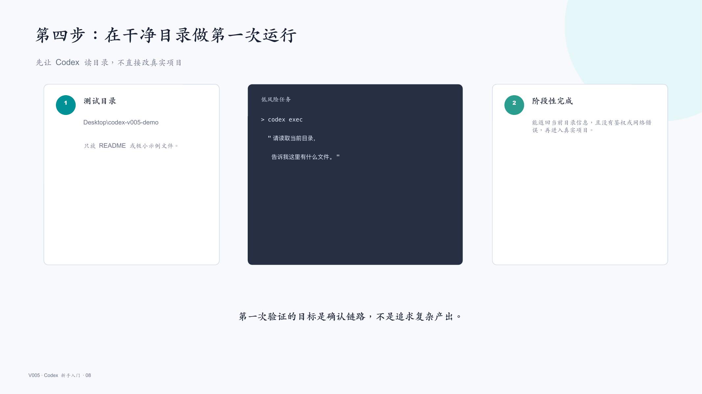
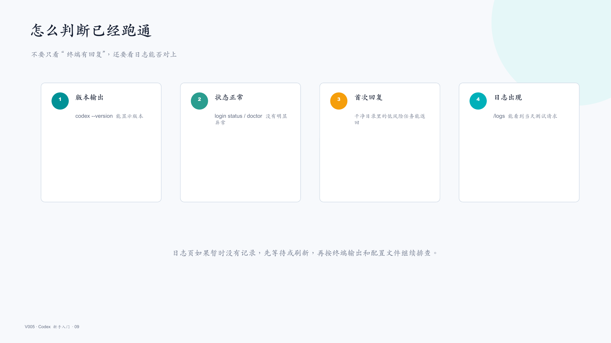
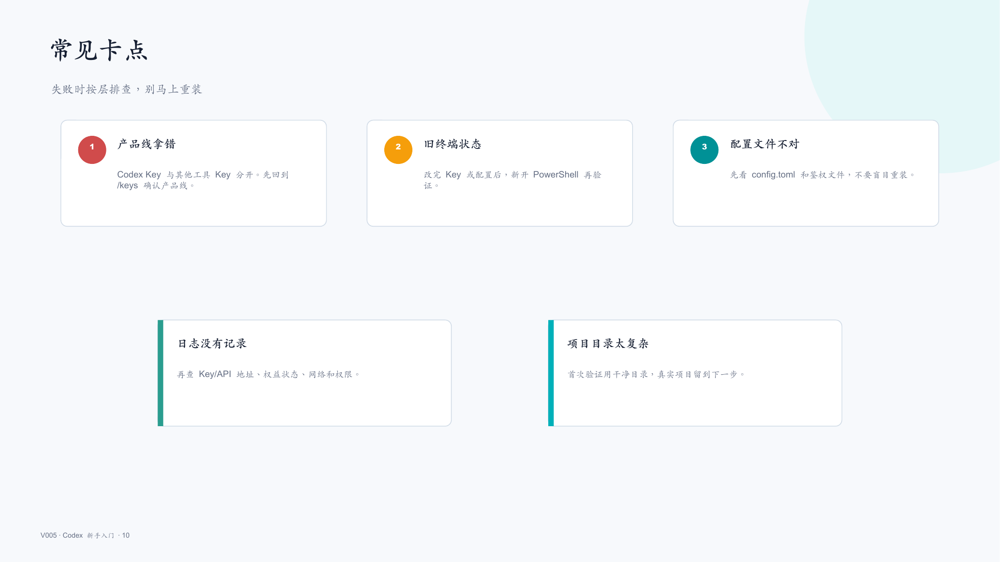
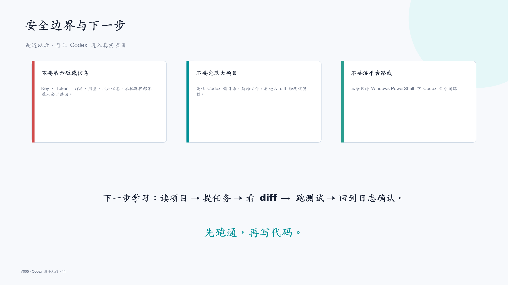
标签
#Codex #积木代码助手 #AI编程 #配置教程 #Key配置 #日志核对 #CLI #入门